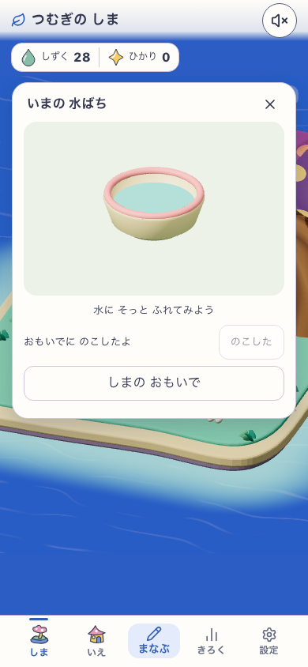
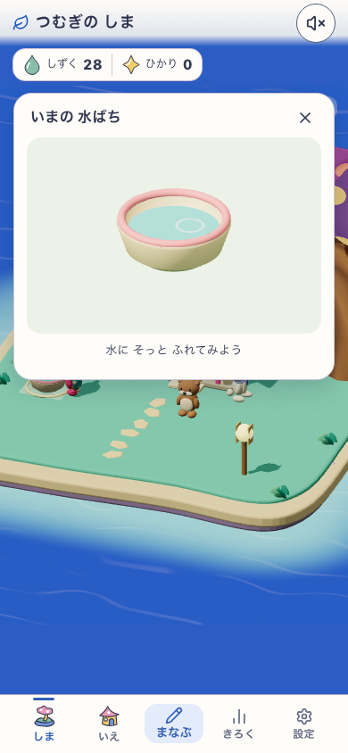
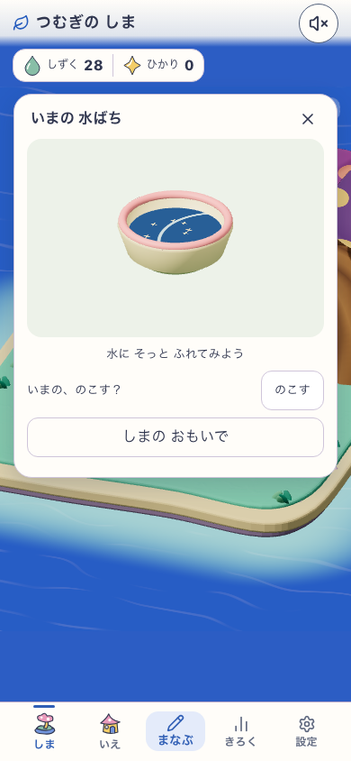
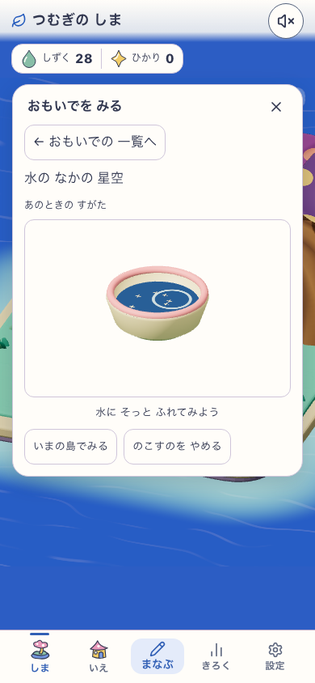
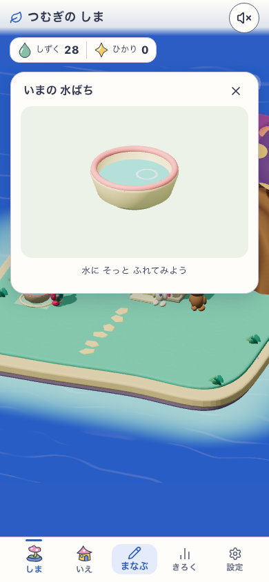
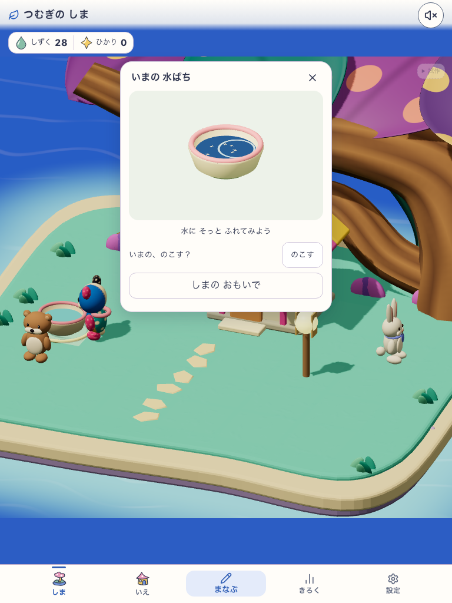
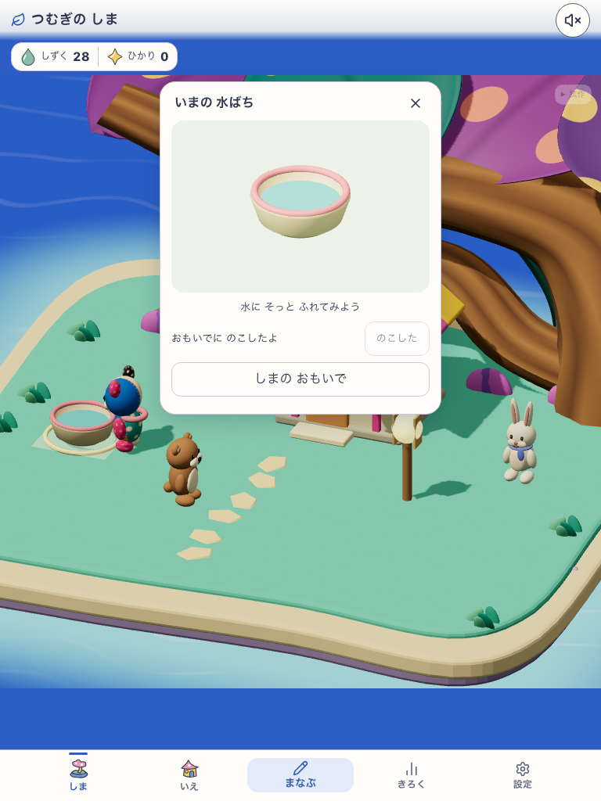
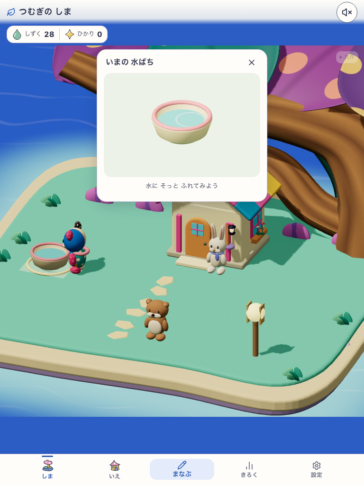
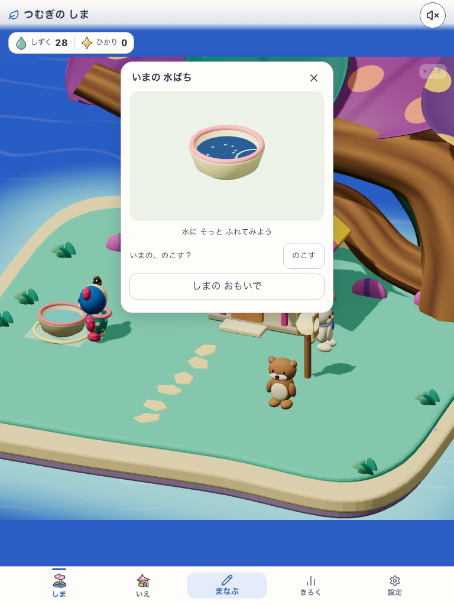
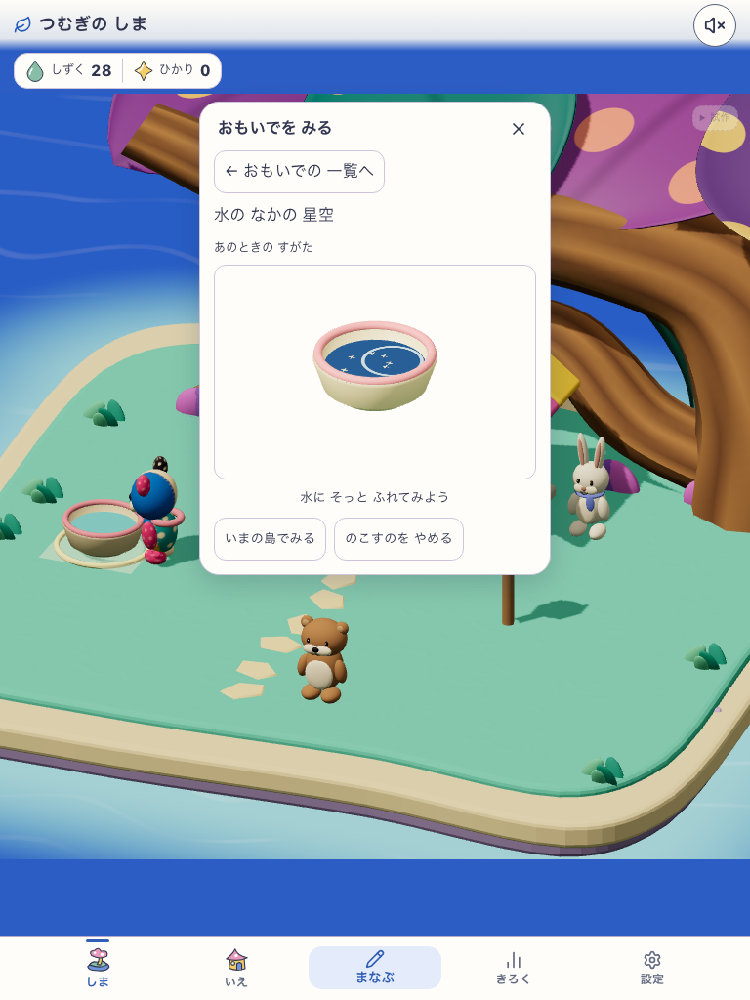
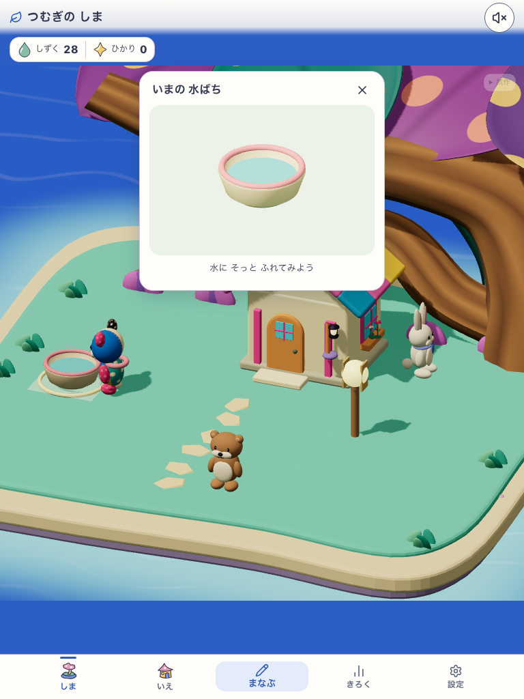
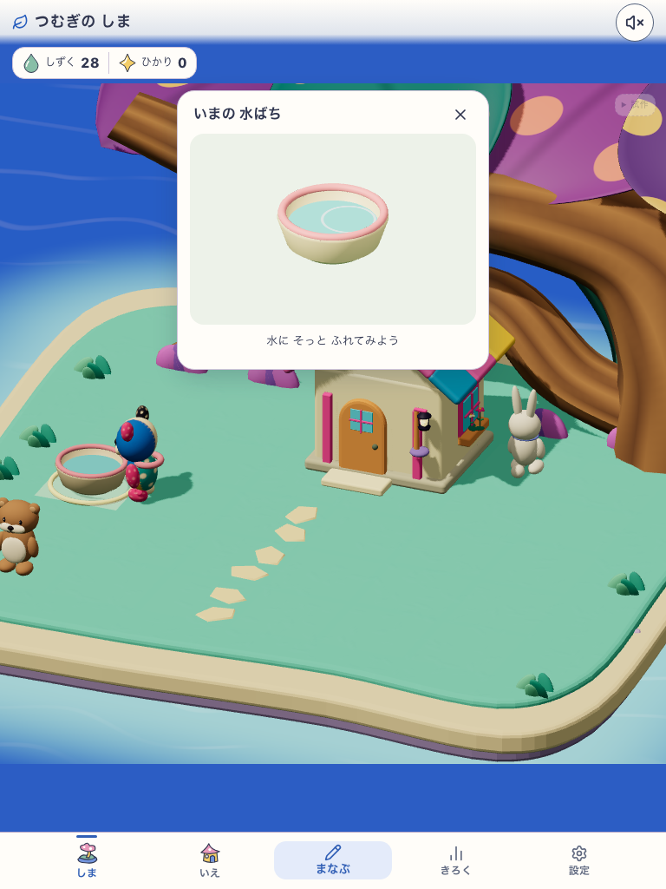
canopy-dots-c3-v1 / water-stars-v1. Actual build: development-local.
Source 27d5645aefdb63c75a5f0b1d48f0268b6d7465ab9113e01862eb5fbb2b21da61.
20 QA credits; real UI purchases and taps. Hidden-document cancellation is an injected diagnostic.
Visual C3 HOLD / Human N=0 / scoped runtime PASS. C3 generated characters are NOT character designs.











